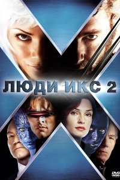

Բարի Գալուստ իմ առաջին էջ
+37498941429
+37491111294
Люди Икс 2 (2003)
Положение мутантов в мире, управляемом людьми без сверхъестественных способностей, становится все более шатким. Теперь, когда они окончательно вышли из тени, развязалась война между мутантами Магнето и Ксавьера, причем первые стремятся поставить человечество на колени, а вторые – добиться для мутантов нормальных условий жизни. Очередное общественное потрясение вызвано новой атакой неизвестного противника, чьи удивительные способности несут угрозу всему миру.
Обычные люди вводят для мутантов особую систему регистрации, а некоторые граждане организуют движение, направленное против мутантов и возглавляемое Уильямом Страйкером. Если верить слухам, в прошлом он проводил опыты над мутантами, и у Ксавьера и его команды есть причины верить этому. Судя по всему, Логан, носящей имя «Росомаха» и сражающийся на стороне Ксавьера, в прошлом был связан со Страйкером и его работой, только вот сам он не помнит, что с ним происходило.
Год выпуска: 2003
Страна: США
Жанр: фантастика, боевик,приключени
Перевод: Дублированный
Продолжительность: 02:13:20
Премьера (РФ): 30 июня 2003
Режиссер: Брайан Сингер
В ролях: Хью Джекман, Патрик Стюарт, Иэн МакКеллен, Фамке Янссен, Джеймс Марсден, Холли Берри, Анна Пэкуин, Шон Эшмор, Ребекка Ромейн, Тайлер Мэйн